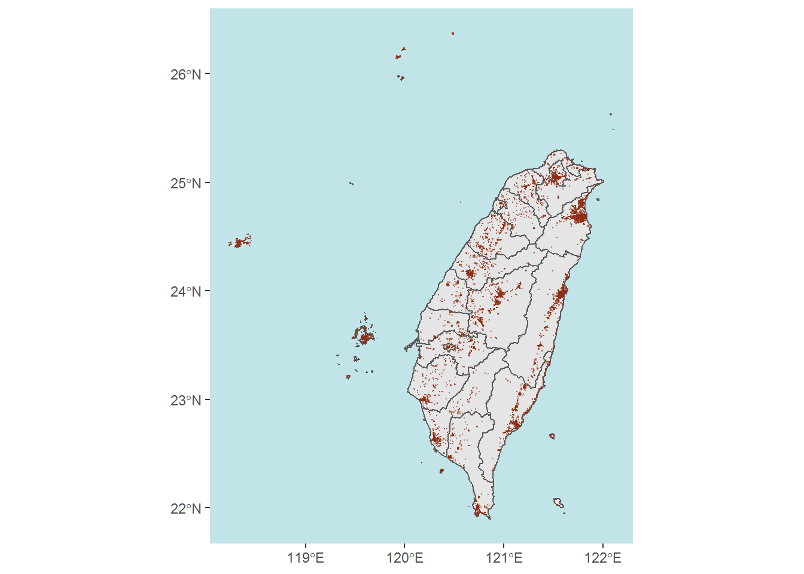

第 4 章 R 實作 02
4.1 台灣旅館數量
library(tidyverse)
sf_taiwan <- sf::read_sf("sf_taiwan\\sf_taiwan.shp")
sf_taiwan_simplify <- sf_taiwan %>%
rmapshaper::ms_simplify() # 簡化圖形
sf_hotel <-sf::read_sf("Hotel_E_f\\Hotel_E_f.shp")sf_taiwan_simplify %>% sf::st_crop(
xmin=119, xmax=123,
ymin=21, ymax=26
) %>%
ggplot()+ # 第一層是sf_taiwan, 以它的CRS為主
geom_sf()+
geom_sf(data=sf_hotel, size = 0.1, color= "#8f2e14", alpha = 0.5) + theme(panel.background = element_rect(fill='#c1e4e9'), panel.grid.major=element_line(colour=NA))## although coordinates are longitude/latitude, st_intersection assumes that they are planar## Warning: attribute variables are assumed to be
## spatially constant throughout all geometries
4.2 中心點
以台南市為例
畫圖：
library(aspace)
library(sf)
sf_Tainan <- sf_taiwan %>% subset(COUNTYNAME == "臺南市")
sf_hotel_Tainan <- (sf_hotel %>% subset(Region == "Tainan City"))
Tainana.hetol.plot <-
sf_Tainan %>% st_crop(
xmin=118, xmax=121,
ymin=22, ymax=24
) %>%
ggplot()+ # 第一層是sf_taiwan, 以它的CRS為主
geom_sf()+
geom_sf(data=sf_hotel_Tainan, size = 1, color= "#7b8d42", alpha= 0.5) +
theme(panel.background = element_rect(fill='#c1e4e9'), panel.grid.major=element_line(colour=NA))
Tainana.hetol.plot整理資料：
4.2.1 mean center
mean_c <- mean_centre(id=1, filename="sf_hotel_Tainan",
weighted=FALSE, weights=NULL, points=sf_hotel_Tainan.xy)## id CENTRE.x CENTRE.y
## 1 1 120.2 23.064.2.2 median center
median_c <- median_centre(id=1, filename="sf_hotel_Tainan",
points=sf_hotel_Tainan.xy)## id median.x median.y
## 1 1 120.2 234.2.3 mean center
CF <- CF(id=1, filename="sf_hotel_Tainan", points=sf_hotel_Tainan.xy)## id CF.x CF.y
## 1 1 120.2 23另外還有一個是課本裡沒提到的： - Centre of Minimum Distance
# CMD(id=1, filename="sf_hotel_Tainan", dist=10,
# points=sf_hotel_Tainan.xy)4.2.4 比較三個中心點：
Tainana.hetol.plot +geom_point(mapping = aes(x = CF$CF.x, y = CF$CF.y), shape = 11, color = "#483c4d", size = 3, alpha = 0.8)+
geom_point(mapping = aes(x = mean_c$CENTRE.x, y = mean_c$CENTRE.y))+
geom_point(mapping = aes(x = median_c$median.x, y = median_c$median.y), shape = 1, color = "#420a00", size = 3, alpha = 0.7)+
labs(x = "", y = "")4.3 橢圓
calc_sde(id=1,points=sf_hotel_Tainan.xy)## $id
## [1] 1
##
## $CALCCENTRE
## [1] TRUE
##
## $weighted
## [1] FALSE
##
## $CENTRE.x
## [1] 120.2
##
## $CENTRE.y
## [1] 23.06
##
## $Sigma.x
## [1] 0.07564
##
## $Sigma.y
## [1] 0.2038
##
## $Major
## [1] "SigmaY"
##
## $Minor
## [1] "SigmaX"
##
## $Theta
## [1] 38.74
##
## $Eccentricity
## [1] 0.9286
##
## $Area.sde
## [1] 0.04844
##
## $TanTheta
## [1] 0.8022
##
## $SinTheta
## [1] 0.6257
##
## $CosTheta
## [1] 0.78
##
## $SinThetaCosTheta
## [1] 0.4881
##
## $Sin2Theta
## [1] 0.3915
##
## $Cos2Theta
## [1] 0.6085
##
## $ThetaCorr
## [1] 38.744.4 plot the ellipse
rotation = function(a){
r = a * pi / 180 #degrees to radians
matrix(c(cos(r), sin(r), -sin(r), cos(r)), nrow = 2, ncol = 2) %>% return()
} # 旋轉矩陣(Rotation matrix)
CENTRE.x <- mean(sf_hotel_Tainan.xy$Px); CENTRE.y <- mean(sf_hotel_Tainan.xy$Py) # 圓心，就是平均
Sigma.x = 0.07563829; Sigma.y = 0.2038352 # 半徑
theta <- 38.73579* pi / 180
t <- rotation(theta)
library(ggforce)## Warning: package 'ggforce' was built under R version
## 4.0.5Tainana.hetol.plot+
geom_point(mapping = aes(x = CENTRE.x, y = CENTRE.y))+
geom_abline(intercept = CENTRE.y-CENTRE.x*tan(theta), slope = tan(theta))+
geom_abline(intercept = CENTRE.y+CENTRE.x*(tan(theta)), slope = -tan(theta))+
geom_ellipse(aes(x0 = CENTRE.x, y0 = CENTRE.y, a = Sigma.y, b = Sigma.x, angle = theta)) ## Warning: range backtransformation not implemented in
## this coord; results may be wrong.## Warning: range backtransformation not implemented in
## this coord; results may be wrong.但是要小心的是，這和進行回歸的點圖很像，要小心離群值（就是離大家很遠的值）會影響方向性的呈現。
資料來源：
https://data.gov.tw/dataset/73280
https://rstudio-pubs-static.s3.amazonaws.com/202534_2c5edc19016247ac9ecfc5713b4604f2.html